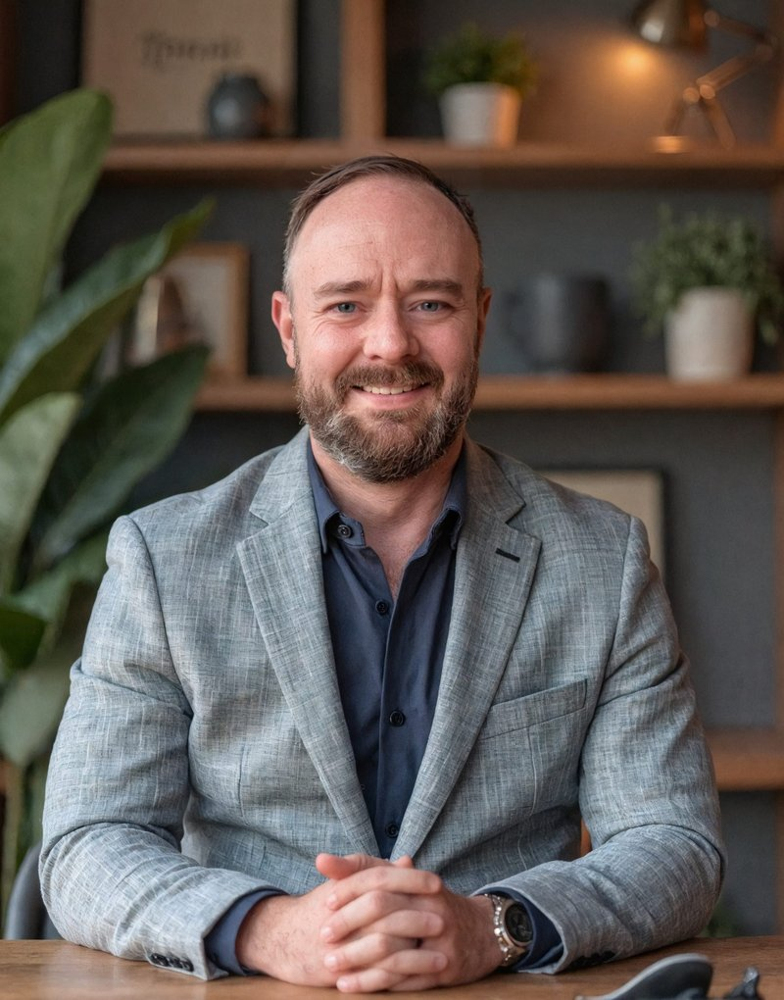

Who I am
I help owners of small businesses and small nonprofits automate the back-office work that keeps landing on their desk, so fewer things slip and they get some of their own time back.
For more than 20 years I've worked across military service, corporate operations, nonprofit management, and entrepreneurship. I served in the U.S. Army, where I led operations and trained aviation crews in some of the most demanding conditions there are. That work taught me how much people can accomplish when their systems are clear and reliable.
At a medium-sized nonprofit with about $8 million in annual program revenue, I built automation tools that cut the time spent on each request by more than half, from 78 minutes to 37. The tools cost $2,900 to build.
Hooman Operations brings that approach to people who run their own operations. Most owners I talk to aren't short on skill; they're short on hours. Automation should take the repetitive work off your plate, run reliably, and be simple enough that you understand what it's doing.